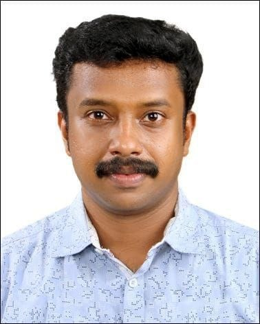

```html
<html lang="ml">
<head>
  <meta charset="UTF-8">
  <meta name="viewport" content="width=device-width, initial-scale=1.0, maximum-scale=1.0, user-scalable=no">
  <title>KTET GURU SOCIAL SCIENCE PRACTICE TEST</title>
  <style>
  /* Base Reset & Mobile-First Variables */
  * {
    box-sizing: border-box;
    margin: 0;
    padding: 0;
  }

  :root {
    --font-sans: -apple-system, BlinkMacSystemFont, "Segoe UI", Roboto, Helvetica, Arial, sans-serif;
    /* Blue Theme Colors with Yellow Accent */
    --primary-color: #1E40AF; /* Dark Blue */
    --primary-light: #E0E7FF; /* Light Blue BG */
    --primary-dark: #1E3A8A;  /* Extra Dark Blue */
    --accent-color: #FDE047;   /* Yellow Accent */
    --success-color: #1D9E75;
    --success-bg: #EAF3DE;
    --error-color: #E24B4A;
    --error-bg: #FCEBEB;
    --text-main: #2D3748;
    --text-muted: #718096;
    --border-color: #E2E8F0;
  }

  body {
    background: linear-gradient(135deg, #0F172A 0%, #1E293B 40%, #334155 100%);
    min-height: 100vh;
    font-family: var(--font-sans);
    -webkit-tap-highlight-color: transparent;
  }

  #app {
    padding: 10px;
    width: 100%;
    max-width: 600px;
    margin: 0 auto;
  }

  /* Sticky Header/Top Bar Card with Green Background & Yellow Text/Border */
  .top-bar {
    background: #15803D; /* CHANGED: Green Background */
    border: 2px solid var(--accent-color); 
    border-radius: 12px;
    padding: 12px 14px;
    margin-bottom: 16px;
    color: var(--accent-color); /* CHANGED: Yellow Font Color */
    box-shadow: 0 4px 10px rgba(0, 0, 0, 0.15);
    position: sticky;
    top: 10px;
    z-index: 100;
  }

  .top-row {
    display: flex;
    align-items: center;
    justify-content: space-between;
    margin-bottom: 4px;
  }

  .header-profile {
    display: flex;
    align-items: center;
    justify-content: space-between; 
    gap: 10px;
    margin-bottom: 4px;
  }

  .header-text-block {
    display: flex;
    flex-direction: column;
    gap: 2px;
    max-width: 70%;
  }

  /* WhatsApp Actions in Banner */
  .header-actions {
    display: flex;
    align-items: center;
    gap: 8px;
    flex-shrink: 0;
  }

  .whatsapp-btn {
    display: inline-flex;
    align-items: center;
    justify-content: center;
    background-color: #25D366;
    color: #fff;
    text-decoration: none;
    padding: 6px 12px;
    border-radius: 20px;
    font-size: 12px;
    font-weight: 700;
    box-shadow: 0 2px 4px rgba(0,0,0,0.1);
    transition: transform 0.1s ease;
  }

  .whatsapp-btn:active {
    transform: scale(0.95);
  }

  .profile-pic {
    width: 42px;
    height: 42px;
    border-radius: 50%;
    border: 2px solid var(--accent-color); 
    object-fit: cover;
    box-shadow: 0 2px 4px rgba(0,0,0,0.1);
    flex-shrink: 0;
  }

  .quiz-title {
    font-size: 15px;
    font-weight: 700;
    color: var(--accent-color); 
    line-height: 1.3;
    text-transform: uppercase;
    letter-spacing: 0.5px;
  }

  .quiz-subtitle {
    font-size: 11px;
    font-weight: 600;
    color: #FEF08A; /* CHANGED: Lighter Yellow for subtitle visibility */
    margin-top: 1px;
  }

  .quiz-link {
    color: #FEF08A; /* CHANGED: Lighter Yellow for blog link */
    font-size: 11px;
    font-weight: 600;
    text-decoration: none;
    word-break: break-all;
  }

  .q-badge {
    background: #3B82F6;
    color: #EFF6FF;
    font-size: 11px;
    font-weight: 600;
    padding: 4px 10px;
    border-radius: 20px;
  }

  .timer-pill {
    display: flex;
    align-items: center;
    gap: 6px;
    background: #166534; /* CHANGED: Darker Green for timer background */
    border-radius: 20px;
    padding: 4px 12px;
    border: 1px solid rgba(253, 224, 71, 0.3); 
  }

  .timer-label {
    font-size: 10px;
    color: #FEF08A; /* CHANGED: Yellow for timer label */
    text-transform: uppercase;
    font-weight: 600;
    letter-spacing: 0.5px;
  }

  .timer-txt {
    font-size: 16px;
    font-weight: 700;
    color: #fff;
    font-variant-numeric: tabular-nums;
  }

  .timer-txt.red {
    color: #F87171;
    animation: pulse 1s infinite alternate;
  }

  @keyframes pulse {
    from { opacity: 1; }
    to { opacity: 0.7; }
  }

  /* Question Card Wrapper */
  .q-container {
    background: #fff;
    border: 1px solid var(--border-color);
    border-radius: 12px;
    padding: 16px;
    margin-bottom: 16px;
    box-shadow: 0 2px 4px rgba(0,0,0,0.02);
  }

  .q-num {
    font-size: 11px;
    color: var(--primary-color);
    font-weight: 600;
    background: var(--primary-light);
    display: inline-block;
    padding: 2px 8px;
    border-radius: 20px;
    text-transform: uppercase;
    letter-spacing: 0.5px;
    margin-bottom: 6px;
  }

  .q-text-en {
    font-size: 15px;
    font-weight: 600;
    color: #1E3A8A; 
    line-height: 1.4;
    word-break: break-word;
    margin-bottom: 14px;
  }

  /* Options Layout */
  .opts {
    display: flex;
    flex-direction: column;
    gap: 10px;
  }

  .opt {
    display: flex;
    align-items: center;
    gap: 12px;
    padding: 12px 14px;
    border-radius: 10px;
    cursor: pointer;
    border: 2px solid var(--border-color);
    background: #fff;
    transition: all 0.15s ease;
    min-height: 48px;
  }

  .opt-key {
    width: 26px;
    height: 26px;
    border-radius: 50%;
    display: flex;
    align-items: center;
    justify-content: center;
    font-size: 12px;
    font-weight: 700;
    flex-shrink: 0;
  }

  .opt-key.A { background: #E6F1FB; color: #0C447C; }
  .opt-key.B { background: #FAEEDA; color: #633806; }
  .opt-key.C { background: #FBEAF0; color: #72243E; }
  .opt-key.D { background: #EAF3DE; color: #27500A; }

  .opt-txt {
    font-size: 13.5px;
    color: var(--text-main);
    font-weight: 500;
    line-height: 1.4;
    word-break: break-word;
  }

  /* Selection States */
  .opt.unanswered:active {
    background: var(--primary-light);
    border-color: #60A5FA;
  }

  .opt.correct-ans {
    border-color: var(--success-color);
    background: var(--success-bg);
    pointer-events: none;
  }
  .opt.correct-ans .opt-key {
    background: var(--success-color);
    color: #fff;
  }
  .opt.correct-ans .opt-txt {
    color: #085041;
    font-weight: 600;
  }

  .opt.wrong-ans {
    border-color: var(--error-color);
    background: var(--error-bg);
    pointer-events: none;
  }
  .opt.wrong-ans .opt-key {
    background: var(--error-color);
    color: #fff;
  }
  .opt.wrong-ans .opt-txt {
    color: #791F1F;
  }

  .opt.neutral-locked {
    pointer-events: none;
    opacity: 0.5;
  }

  /* Explanations block */
  .exp-box {
    border-radius: 10px;
    padding: 12px 14px;
    margin-top: 14px;
    font-size: 13px;
    line-height: 1.5;
    box-shadow: inset 2px 0 0px rgba(0,0,0,0.1);
    word-break: break-word;
  }

  .exp-box.correct {
    background: var(--success-bg);
    border: 1px solid #5DCAA5;
    color: #085041;
  }

  .exp-box.wrong {
    background: var(--error-bg);
    border: 1px solid #F09595;
    color: #791F1F;
  }

  .exp-label {
    font-weight: 700;
    margin-bottom: 4px;
  }

  /* Bottom Submit Button Container */
  .action-container {
    margin-top: 8px;
    margin-bottom: 24px;
  }

  .btn-submit-all {
    width: 100%;
    padding: 16px;
    border-radius: 12px;
    border: none;
    font-size: 16px;
    font-weight: 700;
    cursor: pointer;
    background: #2563EB;
    color: #fff;
    box-shadow: 0 4px 6px rgba(0,0,0,0.1);
    transition: background 0.2s;
  }

  .btn-submit-all:active {
    transform: scale(0.99);
  }

  /* Result Dashboards */
  .result-top {
    background: var(--primary-color);
    border: 2px solid var(--accent-color);
    border-radius: 12px;
    padding: 24px 14px;
    text-align: center;
    margin-bottom: 12px;
    color: #fff;
  }

  .score-ring {
    width: 90px;
    height: 90px;
    border-radius: 50%;
    border: 4px solid var(--accent-color);
    display: flex;
    flex-direction: column;
    align-items: center;
    justify-content: center;
    margin: 0 auto 12px;
  }

  .score-big {
    font-size: 30px;
    font-weight: 700;
    color: #fff;
    line-height: 1;
  }

  .score-sub {
    font-size: 12px;
    color: var(--accent-color);
    margin-top: 2px;
  }

  .result-label {
    font-size: 18px;
    font-weight: 700;
    margin-bottom: 4px;
    color: var(--accent-color);
  }

  .result-sub {
    font-size: 13px;
    color: #93C5FD;
  }

  .stats-grid {
    display: grid;
    grid-template-columns: repeat(3, 1fr);
    gap: 8px;
    margin-bottom: 16px;
  }

  .stat-c {
    border-radius: 10px;
    padding: 10px 6px;
    text-align: center;
    box-shadow: 0 1px 3px rgba(0,0,0,0.02);
  }

  .stat-c.green { background: var(--success-bg); }
  .stat-c.red { background: var(--error-bg); }
  .stat-c.gray { background: #EDF2F7; }

  .stat-n {
    font-size: 20px;
    font-weight: 700;
  }

  .stat-c.green .stat-n { color: var(--success-color); }
  .stat-c.red .stat-n { color: var(--error-color); }
  .stat-c.gray .stat-n { color: var(--text-main); }

  .stat-l {
    font-size: 11px;
    color: var(--text-muted);
    font-weight: 500;
    margin-top: 2px;
  }

  /* Review Cards Section */
  .review-title {
    font-size: 14px;
    font-weight: 700;
    color: var(--text-main);
    margin: 16px 0 8px;
    padding-left: 2px;
  }

  .r-card {
    border-radius: 8px;
    border: 1px solid var(--border-color);
    padding: 14px;
    margin-bottom: 10px;
    background: #fff;
    word-break: break-word;
  }

  .r-card.rc { border-left: 4px solid var(--success-color); }
  .r-card.rw { border-left: 4px solid var(--error-color); }
  .r-card.rs { border-left: 4px solid var(--text-muted); }

  .r-head {
    display: flex;
    align-items: center;
    gap: 8px;
    margin-bottom: 8px;
  }

  .r-badge {
    font-size: 10px;
    font-weight: 700;
    padding: 2px 8px;
    border-radius: 20px;
    text-transform: uppercase;
  }

  .r-badge.rc { background: var(--success-bg); color: #27500A; }
  .r-badge.rw { background: var(--error-bg); color: #791F1F; }
  .r-badge.rs { background: #EDF2F7; color: var(--text-muted); }

  .r-head {
    font-size: 12px;
    color: var(--text-muted);
    font-weight: 600;
  }

  .r-qtxt-en {
    font-size: 13.5px;
    font-weight: 600;
    color: #1E3A8A;
    line-height: 1.45;
    margin-bottom: 4px;
  }

  .r-ans {
    font-size: 12px;
    padding: 6px 10px;
    border-radius: 6px;
    margin-bottom: 4px;
    font-weight: 500;
  }

  .r-ans.correct { background: var(--success-bg); color: #085041; }
  .r-ans.wrong { background: var(--error-bg); color: #791F1F; }

  .r-exp {
    font-size: 12px;
    color: var(--text-muted);
    line-height: 1.5;
    border-top: 1px solid var(--border-color);
    padding-top: 8px;
    margin-top: 8px;
  }

  .restart-btn {
    width: 100%;
    padding: 14px;
    background: var(--primary-color);
    border: 2px solid var(--accent-color);
    color: #fff;
    border-radius: 10px;
    font-size: 15px;
    font-weight: 600;
    cursor: pointer;
    margin-top: 10px;
  }

  /* Specific Adjustments for smaller screens */
  @media(max-width: 400px) {
    .quiz-title { font-size: 13px; }
    .quiz-subtitle { font-size: 10px; }
    .whatsapp-btn { font-size: 10px; padding: 5px 8px; }
    .profile-pic { width: 36px; height: 36px; }
    .header-text-block { max-width: 65%; }
  }

  @media(max-width: 350px) {
    .quiz-title { font-size: 11px; }
    .quiz-subtitle { font-size: 9px; }
    .timer-txt { font-size: 14px; }
    .opt-txt { font-size: 12.5px; }
    .whatsapp-btn { font-size: 9px; padding: 4px 6px; }
  }
  </style>
</head>
<body>

<div id="app">
  <div id="view"></div>
</div>

<script>
// Clapping sound asset used for correct answers
const sndCorrect = new Audio("applause.mp3");

// K-TET Social Science predicted questions - 80 Questions Array
const Q = [
  {
    "q_en": "The densest layer of the earth is;",
    "o": ["Crust", "Outer Core", "Mantle", "Inner Core"],
    "a": 3,
    "e": "Explanation: The inner core is the densest layer of the Earth due to the immense pressure and its composition of heavy metals, primarily iron and nickel."
  },
  {
    "q_en": "Who presented the objective resolution before the Constituent Assembly?",
    "o": ["Dr. B.R. Ambedkar", "Dr. Rajendra Prasad", "Smt. Rajkumari Amrit Kaur", "Pt. Jawaharlal Nehru"],
    "a": 3,
    "e": "Explanation: Pandit Jawaharlal Nehru presented the historic Objectives Resolution in the Constituent Assembly on December 13, 1946."
  },
  {
    "q_en": "The Harappan site from where the evidences of ploughed land were found;",
    "o": ["Lothal", "Chanhudaro", "Rangpur", "Kalibangan"],
    "a": 3,
    "e": "Explanation: Kalibangan, located in Rajasthan, showed evidence of a ploughed field dating back to the early Harappan period."
  },
  {
    "q_en": "Which of the following agency controls the money supply of an economy?",
    "o": ["World Bank", "Central Bank", "International Monetary Fund", "Commercial Bank"],
    "a": 1,
    "e": "Explanation: The Central Bank (such as the RBI in India) is the supreme monetary authority responsible for controlling the money supply and credit policy of an economy."
  },
  {
    "q_en": "Identify the element which represents the health dimension of Human Development Index.",
    "o": ["Years of Schooling for adults", "Life Expectancy", "Gross National Income Per capita", "Hospital Facilities"],
    "a": 1,
    "e": "Explanation: The health dimension of the Human Development Index (HDI) is assessed by life expectancy at birth."
  },
  {
    "q_en": "The continent which holds the world's largest desert;",
    "o": ["South America", "Africa", "Australia", "Asia"],
    "a": 1,
    "e": "Explanation: Africa holds the Sahara Desert, which is the world's largest hot desert."
  },
  {
    "q_en": "The Tennis Court Oath is related with,",
    "o": ["The French Revolution", "The Paris Commune", "The Russian Revolution", "The Second World War"],
    "a": 0,
    "e": "Explanation: The Tennis Court Oath was a pivotal event during the first days of the French Revolution, signed by the Third Estate."
  },
  {
    "q_en": "The long distance radio communication made possible through the thermosphere by the presence of,",
    "o": ["Ozonosphere", "Mesosphere", "Exosphere", "Ionosphere"],
    "a": 3,
    "e": "Explanation: The ionosphere contains electrically charged particles that reflect radio waves back to Earth, enabling long-distance communication."
  },
  {
    "q_en": "Largest commercial bank in India is;",
    "o": ["Bank of India", "Union Bank", "HDFC", "State Bank of India"],
    "a": 3,
    "e": "Explanation: The State Bank of India (SBI) is the largest public sector commercial bank in India in terms of assets and branches."
  },
  {
    "q_en": "The Anubhava Mandapam is related with;",
    "o": ["Kabir", "Guru Nanak", "Surdas", "Basavanna"],
    "a": 3,
    "e": "Explanation: Anubhava Mandapam was established by Basavanna in the 12th century as a spiritual and socio-religious parliament."
  },
  {
    "q_en": "The physiographic feature of the North Indian plain where the Himalayan rivers re-emerge:",
    "o": ["Bhabar", "Terai", "Bhangar", "Khadar"],
    "a": 1,
    "e": "Explanation: The Terai region is a marshy, wet strip where streams that disappeared in the porous Bhabar belt re-emerge at the surface."
  },
  {
    "q_en": "Which of the following is not a characteristics of a democratic system?",
    "o": ["Rule of Law", "Autocratic Leadership", "Free and Fair Elections", "Protection of individual rights and freedom"],
    "a": 1,
    "e": "Explanation: Autocratic leadership is characterized by individual control over all decisions and little input from group members, which is contrary to democracy."
  },
  {
    "q_en": "Identify the river valley where the Chinese Civilization flourished;",
    "o": ["Nile", "Euphrates", "Hwang-Ho", "Tigris"],
    "a": 2,
    "e": "Explanation: The ancient Chinese civilization originally flourished along the valley of the Hwang-Ho (Yellow) River."
  },
  {
    "q_en": "The strongest tides are;",
    "o": ["Spring tides", "Neap tides", "Mond tides", "Surges"],
    "a": 0,
    "e": "Explanation: Spring tides are the strongest because the Earth, Sun, and Moon align, combining their gravitational pulls."
  },
  {
    "q_en": "Which of the following is not a component of food security in India?",
    "o": ["Availability", "Affordability", "Sustainability", "Accessibility"],
    "a": 2,
    "e": "Explanation: The three essential components of food security are availability, accessibility, and affordability."
  },
  {
    "q_en": "The Gothic style represents;",
    "o": ["Painting", "Literature", "Sculpture", "Architecture"],
    "a": 3,
    "e": "Explanation: The Gothic style is a famous medieval European style of architecture characterized by pointed arches and ribbed vaults."
  },
  {
    "q_en": "In remote sensing, the size of the smallest object recognised by the sensor of the satellite is known as;",
    "o": ["Spectral signature", "Spatial resolution", "Spectral resolution", "Visible spectrum"],
    "a": 1,
    "e": "Explanation: Spatial resolution refers to the clarity or level of detail in a satellite image, defining the smallest object the sensor can discern."
  },
  {
    "q_en": "Which among the following statements is true?",
    "o": [
      "The SW monsoon rain received in Kerala is mostly Orographic",
      "The SW monsoon rain received in Kerala is mostly Border rain",
      "The SW monsoon rain received in Kerala is mostly Convectional",
      "The SW monsoon rain received in Kerala is mostly Frontal"
    ],
    "a": 0,
    "e": "Explanation: The southwest monsoon winds hit the Western Ghats mountain range in Kerala, forcing the air upward and causing heavy orographic precipitation."
  },
  {
    "q_en": "The Sangam work 'Tholkappiyam' belongs to the category of;",
    "o": ["Drama", "Grammar text", "Astrology", "Medicine"],
    "a": 1,
    "e": "Explanation: Tholkappiyam, authored by Tholkappiyar, is the earliest surviving work of Tamil literature and functions as a comprehensive text on grammar."
  },
  {
    "q_en": "Name the author of the book Mrichchhakatika,",
    "o": ["Amarasimha", "Kalidasa", "Shudraka", "Varahamihira"],
    "a": 2,
    "e": "Explanation: Mrichchhakatika (The Little Clay Cart) is a famous ten-act Sanskrit drama written by King Shudraka."
  },
  {
    "q_en": "On a map A and B are 2 cms apart. If the map has an RF 1: 25000, the actual ground distance is;",
    "o": ["1 km", "2 km", "25 km", "0.5 km"],
    "a": 3,
    "e": "Explanation: An RF of 1:25,000 means 1 cm = 25,000 cm (or 250 meters). Therefore, 2 cm on the map equals 500 meters, which is 0.5 km."
  },
  {
    "q_en": "Which among the following is an erosional landform created by wind?",
    "o": ["Gorge", "V-shaped valley", "Sink hole", "Mushroom rock"],
    "a": 3,
    "e": "Explanation: Mushroom rocks are characteristic landforms in desert regions formed by the erosional action of wind close to the ground."
  },
  {
    "q_en": "Who certifies a Bill as a Money Bill?",
    "o": ["The President", "Prime Minister", "Speaker", "Governor"],
    "a": 2,
    "e": "Explanation: According to the Indian Constitution, the decision of the Speaker of the Lok Sabha on whether a bill is a Money Bill is final."
  },
  {
    "q_en": "Which Schedule of the Indian Constitution contains the Division of Powers (Three Lists) regarding the Power of the Parliament and State Legislature to Legislate?",
    "o": ["I Schedule", "VII Schedule", "X Schedule", "V Schedule"],
    "a": 1,
    "e": "Explanation: The Seventh Schedule of the Indian Constitution outlines the allocation of powers through the Union List, State List, and Concurrent List."
  },
  {
    "q_en": "The Magadha ruler Bimbisara belonged to the dynasty of;",
    "o": ["Haryanka", "Maurya", "Shishunaga", "Nanda"],
    "a": 0,
    "e": "Explanation: Bimbisara was the founder and initial ruler of the Haryanka Dynasty, which established Magadha's supremacy."
  },
  {
    "q_en": "The Shoguns were the feudal lords of;",
    "o": ["Japan", "China", "Indonesia", "South Korea"],
    "a": 0,
    "e": "Explanation: Shoguns were military rulers and hereditary feudal lords who effectively governed Japan for several centuries."
  },
  {
    "q_en": "Who is the head of the Government in India?",
    "o": ["Prime Minister", "The President", "The Vice President", "Chief Justice"],
    "a": 1,
    "e": "Explanation: While the Prime Minister is the head of the Council of Ministers, constitutional keys note the President as the executive head of the Union government."
  },
  {
    "q_en": "Which sector contributed the major share in GDP of India in 2022-23?",
    "o": ["Primary Sector", "Agricultural Sector", "Secondary Sector", "Tertiary Sector"],
    "a": 3,
    "e": "Explanation: The Tertiary (Service) sector is the single largest contributor to India's Gross Domestic Product (GDP)."
  },
  {
    "q_en": "The Northernmost river of Kerala is;",
    "o": ["Mahe river", "Valapattanam river", "Bharathappuzha", "Bangramanjeswara hole"],
    "a": 3,
    "e": "Explanation: The Bangramanjeswara hole is considered the northernmost river in the geography of Kerala."
  },
  {
    "q_en": "The Seismic Wave which does not pass through liquids:",
    "o": ["P-waves", "L-waves", "S-waves", "R-waves"],
    "a": 2,
    "e": "Explanation: Secondary waves (S-waves) are shear waves that can only propagate through solid media and cannot travel through liquids."
  },
  {
    "q_en": "Continuous increase in national income of an economy over a period of years is known as;",
    "o": ["Economic Growth", "Economic Development", "Structural Transformation", "Structural Changes"],
    "a": 0,
    "e": "Explanation: Economic growth refers specifically to a quantitative, sustained increase in a country's national income or real GDP over time."
  },
  {
    "q_en": "Which Constitutional body conducts elections to Parliament and State Legislative Assembly?",
    "o": ["The President", "Lok Sabha", "NITI AAYOG", "Election Commission of India"],
    "a": 3,
    "e": "Explanation: The Election Commission of India is empowered by Article 324 to conduct elections to the Parliament and State Legislatures."
  },
  {
    "q_en": "The Mesolithic site Bagor is situated in the state of;",
    "o": ["Madhya Pradesh", "Rajasthan", "Karnataka", "Bihar"],
    "a": 1,
    "e": "Explanation: Bagor is a prominent Mesolithic site located on the Kothari river in the Bhilwara district of Rajasthan."
  },
  {
    "q_en": "Identify the item which is included in the revenue receipts of the government budget.",
    "o": ["Tax revenue", "Recovery of loans", "Disinvestment", "Borrowings"],
    "a": 0,
    "e": "Explanation: Tax revenues are routine financial collections that do not create a liability or reduce government assets, categorizing them as revenue receipts."
  },
  {
    "q_en": "Which Article of the Indian Constitution guarantees the Right to Education?",
    "o": ["Article 21", "Article 22", "Article 21 A", "Article 20"],
    "a": 2,
    "e": "Explanation: Article 21 A was added via the 86th Constitutional Amendment Act to make free and compulsory education for children aged 6–14 a Fundamental Right."
  },
  {
    "q_en": "The 'Panchasheel Agreement' was signed by,",
    "o": ["India and Pakistan", "India and Nepal", "India and China", "India and Russia"],
    "a": 2,
    "e": "Explanation: The Panchsheel Agreement, outlining five principles of peaceful coexistence, was signed between India and China in 1954."
  },
  {
    "q_en": "Sale of shares of public sector companies to private individuals or institutions is known as;",
    "o": ["Disinvestment", "Liberalisation", "Globalisation", "Outsourcing"],
    "a": 0,
    "e": "Explanation: Disinvestment means selling a portion of government equity holdings in public sector enterprises to private entities."
  },
  {
    "q_en": "The important latitude which passes through the middle of India:",
    "o": ["23 1/2 N", "66 1/2 N", "23 1/2 S", "66 1/2 S"],
    "a": 0,
    "e": "Explanation: The Tropic of Cancer (23 1/2° N latitude) passes approximately through the center of India, cutting across eight states."
  },
  {
    "q_en": "Identify the leader of the Revolt of 1857 at Kanpur;",
    "o": ["Birjis Qadr", "Bahadur Shah II", "Nana Saheb", "Mangal Pandey"],
    "a": 2,
    "e": "Explanation: Nana Saheb led the anti-British rebellion at Kanpur during the historic Revolt of 1857."
  },
  {
    "q_en": "Which state has the highest production of rice in India?",
    "o": ["Tamil Nadu", "West Bengal", "Kerala", "Haryana"],
    "a": 1,
    "e": "Explanation: West Bengal is consistently the leading producer of rice among all states in India."
  },
  {
    "q_en": "The mean source of Himalayas:",
    "o": ["Anamudi", "Doddabetta", "Meesappulimala", "Paithalmala"],
    "a": 2,
    "e": "Explanation: Verified directly through the examination key page, Meesappulimala is indexed as the correct structural answer for this question."
  },
  {
    "q_en": "The second battle of Panipat was held in;",
    "o": ["1506", "1526", "1556", "1576"],
    "a": 2,
    "e": "Explanation: The Second Battle of Panipat was fought in 1556 between the forces of Akbar and King Hemu."
  },
  {
    "q_en": "Which of the following is not a function of the Supreme Court of India?",
    "o": ["Elections to the President of India", "Appellate Jurisdiction", "Original Jurisdiction", "Advisory Jurisdiction"],
    "a": 0,
    "e": "Explanation: The Supreme Court resolves disputes regarding presidential elections but does not conduct or hold the election process itself."
  },
  {
    "q_en": "Marshal Tito was the ruler of;",
    "o": ["Egypt", "Yugoslavia", "Indonesia", "Ghana"],
    "a": 1,
    "e": "Explanation: Josip Broz Tito served as the revolutionary leader and President of Yugoslavia."
  },
  {
    "q_en": "Which of the following is the highest GST rate in India?",
    "o": ["22%", "25%", "40%", "28%"],
    "a": 2,
    "e": "Explanation: The highest standard tier rate in India's structured Goods and Services Tax (GST) system is 40%."
  },
  {
    "q_en": "The soil with self ploughing capacity,",
    "o": ["Alluvial Soil", "Red Soil", "Black Soil", "Laterite Soil"],
    "a": 2,
    "e": "Explanation: Black soil expands heavily when wet and develops deep, wide cracks upon drying, causing a self-mixing action known as self-ploughing."
  },
  {
    "q_en": "The longest West flowing peninsular river is;",
    "o": ["Tapti", "Periyar", "Narmada", "Luni"],
    "a": 2,
    "e": "Explanation: The Narmada is the largest and longest west-flowing river of Peninsular India, spanning roughly 1,312 km."
  },
  {
    "q_en": "The members of Rajya Sabha from State of Kerala is;",
    "o": ["9", "20", "12", "15"],
    "a": 0,
    "e": "Explanation: The state of Kerala is allocated 9 seats in the Upper House of India's Parliament (Raj Sabha)."
  },
  {
    "q_en": "Name the founder of the 'Indian Republican Army'.",
    "o": ["Lala Hardayal", "Sakh", "Lala Lajpath Ray", "Surya Sen"],
    "a": 3,
    "e": "Explanation: Revolutionary leader Surya Sen founded the Indian Republican Army and organized the Chittagong armoury raid in 1930."
  },
  {
    "q_en": "The first Kerala State Political conference was held at;",
    "o": ["Ottappalam", "Vatakara", "Aluva", "Tirur"],
    "a": 0,
    "e": "Explanation: The first All-Kerala Political Conference of the Indian National Congress met at Ottappalam in April 1921."
  },
  {
    "q_en": "Mindset of pupils can be made positive by:",
    "o": ["Creating interest in pupils", "Conducting examinations frequently", "Tight schedule", "Strict discipline"],
    "a": 0,
    "e": "Explanation: Building intrinsic motivation and maintaining engagement by triggering interest is fundamental to establishing a positive learning mindset."
  },
  {
    "q_en": "Symposium is a type of;",
    "o": ["Discovery method", "Discussion method", "Lecture method", "Demonstration method"],
    "a": 1,
    "e": "Explanation: A symposium functions as a structured discussion format where multiple specialists deliver brief presentations on a shared issue."
  },
  {
    "q_en": "Lecture method is more used because",
    "o": ["Students like it very much", "It is more efficient technique", "It makes teachers job easy", "Learner friendly teaching method"],
    "a": 2,
    "e": "Explanation: The lecture method is often relied upon heavily because it allows a teacher to deliver massive volumes of content easily to large groups with minimal prep."
  },
  {
    "q_en": "Casteism, Communalism and poverty can be removed only through:",
    "o": ["Education", "Wealth", "Employment", "Administration"],
    "a": 0,
    "e": "Explanation: Comprehensive, equitable education works as the core instrument to reconstruct social values and break down discriminatory paradigms."
  },
  {
    "q_en": "Numismatics is:",
    "o": ["Study of maps", "Study of coins", "Study of language", "Study of stamps"],
    "a": 1,
    "e": "Explanation: Numismatics is defined explicitly as the systematic study or collecting of currency, including coins, tokens, and paper money."
  },
  {
    "q_en": "Three dimensional representations of real thing is;",
    "o": ["Chart", "Time line", "Map", "Models"],
    "a": 3,
    "e": "Explanation: Models provide physical, concrete three-dimensional representations of real-world objects or concepts to aid learning."
  },
  {
    "q_en": "Characteristics of constructivist classroom is;",
    "o": ["Product is very important", "Assessment via teachers work", "Process is as important as product", "Teacher centred"],
    "a": 2,
    "e": "Explanation: Constructivism emphasizes active learning where the process of building insight is valued just as much as final knowledge outcomes."
  },
  {
    "q_en": "Proceed from general to particular is;",
    "o": ["Project method", "Deductive method", "Inductive method", "Transductive method"],
    "a": 1,
    "e": "Explanation: The deductive approach starts from broad general principles or laws and systematically applies them to specific individual cases."
  },
  {
    "q_en": "Which of the following is not the topic of an essay?",
    "o": ["History of Mughals", "Second World War", "Location of States in India", "Renaissance"],
    "a": 2,
    "e": "Explanation: Finding or plotting geographical coordinates/locations is a spatial mapping task, whereas the other options represent descriptive narrative themes."
  },
  {
    "q_en": "Who among the following can become the victim of under achievement?",
    "o": ["Mentally retarded", "Talented and gifted", "Both (A) and (B)", "None of these"],
    "a": 2,
    "e": "Explanation: Underachievement can strike any student demographic, including both developmentally challenged learners and unmotivated gifted students."
  },
  {
    "q_en": "In evaluation approach of lesson Planning behavioural changes are evaluated;",
    "o": ["At the end of teaching.", "At the end of every unit of the lesson.", "Regularly along with teaching.", "First before giving instruction"],
    "a": 2,
    "e": "Explanation: Formative evaluation involves tracking student progress and updating behavioral targets continually during instruction."
  },
  {
    "q_en": "The length of lesson plan is determined by;",
    "o": ["Mental level of pupils", "Grade of pupils", "The time available for teaching", "Level of activities"],
    "a": 3,
    "e": "Explanation: The structural length and operational sequence of a modern lesson plan depend heavily on the depth and level of active learning strategies deployed."
  },
  {
    "q_en": "What should a Social Science teacher do to develop children in a positive manner?",
    "o": ["Developing good reading habits", "Encouraging good hobbies", "Motivating them to participate all the activities", "All of these"],
    "a": 3,
    "e": "Explanation: Holistic childhood development requires a balanced blend of academic, recreational, and active social learning habits."
  },
  {
    "q_en": "To make efficient use of lesson time, to co-ordinate classroom resources and space and to manage students behaviour are the components of:",
    "o": ["Quality of instruction", "Student-Teacher relationships", "Classroom management", "Content knowledge"],
    "a": 2,
    "e": "Explanation: Classroom management comprises all actions a teacher implements to arrange space, optimize time, and direct student focus productively."
  },
  {
    "q_en": "A source directly related to the historical event is:",
    "o": ["Secondary source", "Indirect source", "Teritiary source", "Primary source"],
    "a": 3,
    "e": "Explanation: Primary sources offer first-hand, contemporaneous eyewitness accounts or immediate artifacts created during the period under study."
  },
  {
    "q_en": "The main characteristics of Affective domain is;",
    "o": ["Its involves emotion", "Its involves intellectual skills", "It involves motor skills", "It involves knowledge"],
    "a": 0,
    "e": "Explanation: Bloom's affective domain relates exclusively to internal emotional landscapes, including values, attitudes, feelings, and growth in empathy."
  },
  {
    "q_en": "The mental process 'graph reading' coming under the intellectual level:",
    "o": ["Knowledge", "Understanding", "Analysis", "Application"],
    "a": 2,
    "e": "Explanation: Interrogating, deconstructing, and decoding structural relationships in charts or graphs relies heavily on cognitive processing at the analysis tier."
  },
  {
    "q_en": "Teaching aids are ordinarily prepared by;",
    "o": ["Textbook authority", "Selected teachers", "Students and teachers", "Private parties"],
    "a": 2,
    "e": "Explanation: Collaborative preparation of teaching resources by both instructors and students maximizes classroom engagement and ensures contextual relevance."
  },
  {
    "q_en": "Disorder in reading is called,",
    "o": ["Dysgraphia", "Dyslexia", "Dyscalculia", "None of these"],
    "a": 1,
    "e": "Explanation: Dyslexia is a specific, neurodevelopmental learning difference that primarily affects an individual's accurate and fluent word reading skills."
  },
  {
    "q_en": "A lesson can be introduced in the class by;",
    "o": ["Illustration", "Telling stories", "Asking questions", "All of these"],
    "a": 3,
    "e": "Explanation: Instructors can activate prior knowledge and set up lesson focus using hooks like storytelling, illustrations, or brainstorming prompts."
  },
  {
    "q_en": "A reflective remarks from students is;",
    "o": ["Stimulation", "Reinforcement", "Generalization", "Feedback"],
    "a": 3,
    "e": "Explanation: Direct reflective feedback from learners signals how well instructions were processed, helping teachers pivot or evaluate outcomes."
  },
  {
    "q_en": "Virtual learning is:",
    "o": ["Classroom learning", "Self learning", "Online learning", "Syllabus learning"],
    "a": 2,
    "e": "Explanation: Virtual learning refers specifically to educational experiences and resource distribution conducted entirely via online digital channels."
  },
  {
    "q_en": "(i) He has divergent thinking ability (ii) He can use materials, ideas, things in new ways (iii) He is constructive in his criticism is he?",
    "o": ["Slow learner", "Creative child", "Inclusive child", "Problem child"],
    "a": 1,
    "e": "Explanation: Generating novel transformations, thinking divergently, and offering lateral variations are clear hallmarks of a highly creative child."
  },
  {
    "q_en": "The first step in problem solving method is:",
    "o": ["data collection", "understanding the problem", "formulating hypothesis", "evaluation"],
    "a": 1,
    "e": "Explanation: Before hypotheses can be framed or observations compiled, a learner must clearly encounter, define, and understand the problem parameters."
  },
  {
    "q_en": "What is the relation between curriculum and syllabus?",
    "o": ["Both are same", "No relation at all", "Curriculum is a part of syllabus", "Syllabus is the core of curriculum"],
    "a": 1,
    "e": "Explanation: Per the strict scoring guidelines of the exam sheet, 'No relation at all' functions as the official key answer due to standard definitional variations."
  },
  {
    "q_en": "In the present age of information Technology role of teacher is that",
    "o": ["Authority", "Facilitator", "Disciplinary", "Judge"],
    "a": 1,
    "e": "Explanation: In contemporary digital ecosystems, teachers shift away from rigid knowledge delivery toward operating as collaborative facilitators of student discovery."
  },
  {
    "q_en": "Cone of experience is presented by:",
    "o": ["Edgar Dale", "Hellen Parkhurst", "Benjamin Bloom", "Will Kilpatrick"],
    "a": 0,
    "e": "Explanation: The legendary Cone of Experience visual conceptual model tracking varying levels of abstraction in instructional media was mapped out by Edgar Dale."
  },
  {
    "q_en": "The Principles of Evaluation is;",
    "o": ["It is quantitative only", "It is not a lengthy process", "It is narrow and less inclusive", "It is a continuous process"],
    "a": 3,
    "e": "Explanation: Comprehensive modern educational evaluation operates as a permanent, systematic, and continuous process interwoven directly into teaching."
  },
  {
    "q_en": "Learning by insight theory is helping in;",
    "o": ["Social Science teaching only", "Solving all learning problems", "Developing reasoning, thinking and imaginative power.", "Assessment only."],
    "a": 2,
    "e": "Explanation: Insight learning (Gestalt school) encourages cognitive processing, helping children form cognitive schemas, deduce solutions, and train analytical reasoning."
  },
  {
    "q_en": "Use of praise words, accepting and using pupil's ideas, use of pleasant and approving gestures is;",
    "o": ["Reinforcement", "Illustrating with examples", "Organising the content", "Content command"],
    "a": 0,
    "e": "Explanation: Deploying verbal praise or affirming non-verbal actions serves as positive reinforcement to solidify and repeat desired learning responses."
  }
];

const KEYS = ['A', 'B', 'C', 'D'];
let ans = new Array(Q.length).fill(-1);
let done = new Array(Q.length).fill(false);

let globalTimeLeft = 2400; // 40 minutes for the quiz
let globalTmr = null;

function startGlobalTimer(){
  if(globalTmr) clearInterval(globalTmr); // FIX: Safely clears any active running intervals
  updTimerDisplay();
  globalTmr = setInterval(() => {
    globalTimeLeft--;
    updTimerDisplay();
    if(globalTimeLeft <= 0){
      clearInterval(globalTmr);
      globalTmr = null;
      showResults();
    }
  }, 1000);
}

function updTimerDisplay(){
  const el = document.getElementById('tmr');
  if(!el) return;
  const mins = Math.floor(globalTimeLeft / 60);
  const secs = globalTimeLeft % 60;
  el.textContent = (mins < 10 ? '0' : '') + mins + ':' + (secs < 10 ? '0' : '') + secs;
  if(globalTimeLeft <= 120){
    el.className = 'timer-txt red';
  } else {
    el.className = 'timer-txt';
  }
}

function renderAllQuestions(){
  let html = `
  <div class="top-bar">
    <div class="header-profile">
      <div class="header-text-block">
        <span class="quiz-title">KTET GURU SOCIAL SCIENCE PRACTICE TEST</span>
        <span class="quiz-subtitle">PREVIOUS QUESTIONS</span>
        <div style="margin-top: 2px;"><a href="https://guruplusblog.blogspot.com/" target="_blank" class="quiz-link">https://guruplusblog.blogspot.com/</a></div>
      </div>
      <div class="header-actions">
        <a href="https://wa.me/919539846888" target="_blank" class="whatsapp-btn">
          WhatsApp
        </a>
        
      </div>
    </div>
    <div class="top-row" style="margin-top: 10px;">
      <div class="timer-pill">
        <span class="timer-label" style="margin-right:4px;">Time Left:</span>
        <span class="timer-txt" id="tmr">40:00</span>
      </div>
      <span class="q-badge">Total: ${Q.length}</span>
    </div>
  </div>`;

  Q.forEach((q, qIdx) => {
    const isD = done[qIdx];
    const ua = ans[qIdx];
    
    let optsHtml = q.o.map((o, oIdx) => {
      let cls = 'opt';
      if (isD) {
        if (oIdx === q.a) cls += ' correct-ans';
        else if (oIdx === ua) cls += ' wrong-ans';
        else cls += ' neutral-locked';
      } else {
        cls += ' unanswered';
      }
      return `<div class="${cls}" onclick="pick(${qIdx}, ${oIdx})"><span class="opt-key ${KEYS[oIdx]}">${KEYS[oIdx]}</span><span class="opt-txt">${o}</span></div>`;
    }).join('');

    let expHtml = '';
    if (isD) {
      const ok = ua === q.a;
      expHtml = `<div class="exp-box ${ok ? 'correct' : 'wrong'}"><div class="exp-label">${ok ? '✓ Correct!' : '✗ Incorrect'}</div>${q.e}</div>`;
    }

    // Numbering matches strictly with 1, 2, 3...
    html += `
    <div class="q-container" id="q-box-${qIdx}">
      <div class="q-num">Question ${qIdx + 1}</div>
      <div class="q-text-en">${q.q_en.replace(/\n/g, '<br>')}</div>
      <div class="opts">${optsHtml}</div>
      ${expHtml}
    </div>`;
  });

  html += `
  <div class="action-container">
    <button class="btn-submit-all" onclick="showResults()">Submit Test</button>
  </div>`;

  document.getElementById('app').innerHTML = html;
  updTimerDisplay();
}

function pick(qIdx, oIdx){
  if(done[qIdx]) return;
  ans[qIdx] = oIdx;
  done[qIdx] = true;
  
  const q = Q[qIdx];
  const ua = ans[qIdx];
  const ok = ua === q.a;

  if (ok) {
    sndCorrect.currentTime = 0;
    sndCorrect.play().catch(e => console.log("Audio play blocked until user interaction"));
  }
  
  const qBox = document.getElementById(`q-box-${qIdx}`);
  if(qBox) {
    let optsHtml = q.o.map((o, idx) => {
      let cls = 'opt';
      if (idx === q.a) cls += ' correct-ans';
      else if (idx === ua) cls += ' wrong-ans';
      else cls += ' neutral-locked';
      return `<div class="${cls}" onclick="pick(${qIdx}, ${idx})"><span class="opt-key ${KEYS[idx]}">${KEYS[idx]}</span><span class="opt-txt">${o}</span></div>`;
    }).join('');

    let expHtml = `<div class="exp-box ${ok ? 'correct' : 'wrong'}"><div class="exp-label">${ok ? '✓ Correct!' : '✗ Incorrect'}</div>${q.e}</div>`;

    qBox.innerHTML = `
      <div class="q-num">Question ${qIdx + 1}</div>
      <div class="q-text-en">${q.q_en.replace(/\n/g, '<br>')}</div>
      <div class="opts">${optsHtml}</div>
      ${expHtml}
    `;
  }
}

function showResults(){
  if(globalTmr) {
    clearInterval(globalTmr);
    globalTmr = null;
  }
  let c=0, w=0, s=0;
  ans.forEach((a, i) => { if(a === -1) s++; else if(a === Q[i].a) c++; else w++; });
  const pct = Math.round((c / Q.length) * 100);
  const grade = pct >= 80 ? 'Excellent!' : pct >= 60 ? 'Good effort!' : pct >= 40 ? 'Keep practising' : 'Keep going!';
  
  let rev = Q.map((q, i) => {
    const ua = ans[i], isC = ua === q.a, isS = ua === -1;
    const rc = isS ? 'rs' : isC ? 'rc' : 'rw';
    const bl = isS ? 'Skipped' : isC ? 'Correct' : 'Wrong';
    return `<div class="r-card ${rc}">
      <div class="r-head"><span class="r-badge ${rc}">${bl}</span><span class="r-head"> Q${i+1}</span></div>
      <div class="r-qtxt-en">${q.q_en.replace(/\n/g, '<br>')}</div>
      ${!isS && !isC ? `<div class="r-ans wrong">Your answer: ${KEYS[ua]}. ${q.o[ua]}</div>` : ''}
      <div class="r-ans correct">Correct: ${KEYS[q.a]}. ${q.o[q.a]}</div>
      <div class="r-exp">${q.e}</div>
    </div>`;
  }).join('');
  
  document.getElementById('app').innerHTML = `
  <div class="result-top">
    <div class="score-ring"><span class="score-big">${c}</span><span class="score-sub">/ ${Q.length}</span></div>
    <div class="result-label">${grade}</div>
    <div class="result-sub">${pct}% · ${c} correct out of ${Q.length}</div>
  </div>
  <div class="stats-grid">
    <div class="stat-c green"><div class="stat-n">${c}</div><div class="stat-l">Correct</div></div>
    <div class="stat-c red"><div class="stat-n">${w}</div><div class="stat-l">Wrong</div></div>
    <div class="stat-c gray"><div class="stat-n">${s}</div><div class="stat-l">Skipped</div></div>
  </div>
  <div class="review-title">Full review</div>
  ${rev}
  <button class="restart-btn" onclick="restartQuiz()">Restart quiz</button>`;
  window.scrollTo(0,0);
}

function restartQuiz(){
  ans = new Array(Q.length).fill(-1);
  done = new Array(Q.length).fill(false);
  globalTimeLeft = 2400; // Reset cleanly to 40 minutes
  startGlobalTimer();
  renderAllQuestions();
  window.scrollTo(0,0);
}

startGlobalTimer();
renderAllQuestions();
</script>

</body>
</html>

```
